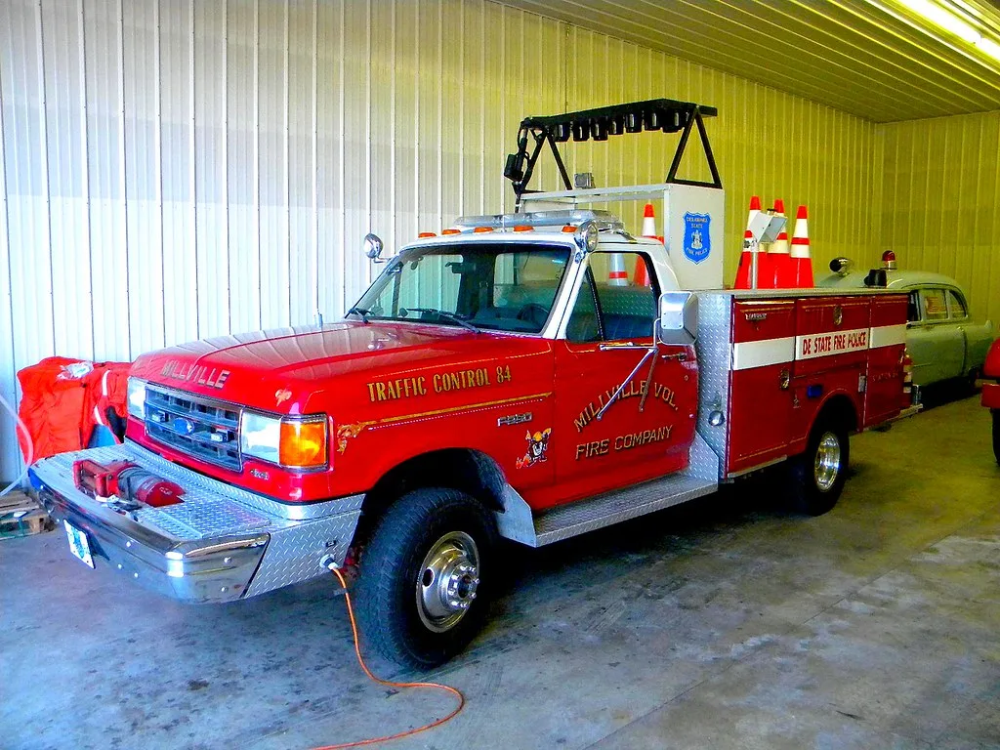

고양 일산 아파트서 화재…주민 대피 소동, 48분 만에 진화
경기 고양시 일산동구 마두동의 한 아파트에서 불이 나 주민들이 긴급 대피하는 소동이 벌어졌다. 25일 오후 2시 34분쯤 이 아파트 4층에서 원인을 알 수 없는 불이 났다는 신고가 소방당국에 접수됐다. 신고를 받은 소방당국은 즉시 대응 1단계를 발령하고 인근 소방서 인력과 장비를 현장에 집중 투입했다.
화재 당시 건물 안에서 폭발음과 비슷한 소리가 들렸다는 주민들의 신고가 잇따르면서 한때 현장은 큰 혼란에 빠졌다. 소방당국에 따르면 화재 직후에만 관련 신고가 모두 18건 접수될 정도로 인근 주민들의 불안감이 컸던 것으로 전해졌다. 갑작스러운 소음과 연기에 놀란 주민들이 대피 과정에서 서로 안전 여부를 확인하느라 아파트 단지 안팎이 한동안 어수선한 분위기였다고 한다. 주말 오후 시간대에 불이 나면서 집에 머물던 주민들이 한꺼번에 몰려나와 대피하느라 단지 내 통로가 한때 붐비기도 했다.

소방당국은 화재 신고 접수 직후 소방차 15대와 소방관 44명을 현장에 투입해 진화 작업을 벌였다. 신속한 초기 대응 덕분에 큰불로 번지지 않았고, 화재는 신고 접수로부터 48분 만인 오후 3시 22분쯤 완전히 진화됐다. 다행히 인명 피해로 이어질 수 있는 대형 화재로 확산되지는 않았지만, 도심 주거지에서 발생한 화재인 만큼 주민들의 놀란 가슴은 쉽게 가라앉지 않았다. 소방 관계자는 초기 신고와 인력 투입이 신속하게 이뤄진 점이 피해를 최소화하는 데 주효했다고 설명했다.
이번 화재로 연기를 들이마신 주민 10여 명이 경미한 피해를 입은 것으로 파악됐다. 이 가운데 일부는 현장에서 응급 처치를 받았으며, 다행히 병원으로 이송될 정도의 중대한 부상자는 나오지 않은 것으로 전해졌다. 소방당국은 화재 발생 직후 건물 내 잔류 여부를 확인하기 위해 각 세대를 일일이 점검하는 등 추가 인명 피해 가능성을 차단하는 데도 주력했다. 아파트 관리사무소 측도 대피 방송과 함께 고령층 등 거동이 불편한 입주민을 우선적으로 확인하며 소방당국의 구조 작업을 도운 것으로 알려졌다.

경찰과 소방당국은 화재 원인을 정확히 규명하기 위한 합동 감식에 착수했다. 4층 발화 지점을 중심으로 전기 배선 이상이나 누전 가능성 등 다양한 경우의 수를 열어두고 조사를 진행 중인 것으로 알려졌다. 폭발음이 들렸다는 목격담이 잇따른 만큼, 정확한 발화 원인이 규명되기까지는 다소 시간이 걸릴 것으로 보인다. 감식 결과에 따라 해당 세대뿐 아니라 인접 세대의 피해 규모와 복구 범위도 함께 확정될 전망이다.
이번 화재를 계기로 노후 아파트 단지의 화재 안전 관리에 대한 우려도 다시 제기되고 있다. 특히 여름철 냉방기기 사용이 늘면서 전기 화재 위험이 커지는 시기인 만큼, 소방당국은 각 가정에서 노후 배선과 콘센트 상태를 미리 점검해 달라고 당부했다. 아울러 화재 발생 시 신속한 대피를 위해 비상계단과 대피로 확보 상태를 평소에 확인해 둘 것을 함께 권고했다. 공동주택 특성상 한 세대의 화재가 이웃 세대로 빠르게 번질 수 있는 만큼, 관리사무소 차원의 정기적인 소방시설 점검과 입주민 대상 대피 훈련의 필요성도 함께 제기된다.